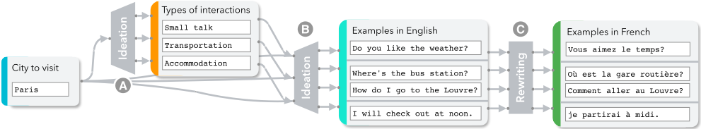
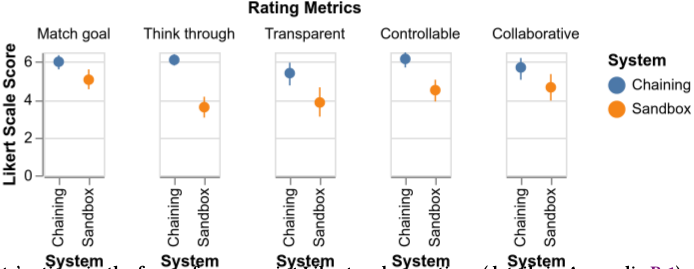
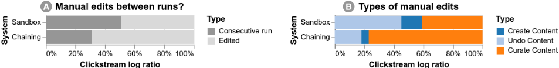
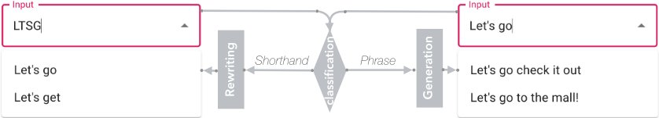
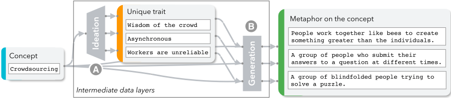

AI Chains: Transparent and Controllable Human-AI Interaction by Chaining Large Language Model Prompts
AI Chains：通过链式组合 LLM Prompt 实现透明且可控的人机交互
简介
论文针对 LLM 在多步推理、多目标复杂任务上单次调用效果差、且黑盒不透明难调试的问题，提出 Chaining 方法：将复杂任务分解为多个子步骤，每步由一次独立 LLM 调用完成，前序输出作为后续输入，并基于对 73 个现有 LLM 用例的调研归纳出 8 种原语操作（Classification、Ideation、Split Points、Compose Points 等）及配套 prompt 模板与默认 temperature。作者还构建了可视化交互系统，支持在 prompt、中间数据与 Chain 结构三个层级编辑调试。20 人被试实验（统一使用 LaMDA 137B）显示：Chaining 使任务结果在约 82% 的情况下优于单框 Sandbox，透明性、可控性、协作感评分显著提升，用户从反复重跑模型转向精修中间结果，并发展出'unit-test 子步骤'、'对比并行路径'等调试方式。案例研究进一步验证了 Chain 在 VegaLite 可视化代码调试与辅助文本输入中的价值。
问题
LLM 虽在简单任务上表现出色，但在需要多步推理或同时满足多个目标的复杂任务上，单次模型调用产出质量低（如同时要求改写语气、补充具体建议并覆盖所有子问题）；同时模型黑盒、不透明、难调试，用户难以确定如何修改 prompt 来纠正意外输出，也难以建立对模型能力与局限的准确心智模型。
方法
提出 Chaining：将复杂任务分解为多个子步骤，每步由一次独立 LLM 运行完成，前序步骤输出作为后续输入，逐步聚合收益。通过调研 73 个现有 LLM demo 归纳出 8 种原语操作（Classification、Information Extraction、Rewriting、Split Points、Compose Points、Factual Query、Generation、Ideation），按'校验分类输入/从 LLM 获取新信息/重组输入'三类组织，分别应对推理弱、exposure bias、输入格式不佳三类 LLM 挑战；每种操作配有默认 prompt 模板（含 zero-shot/few-shot 占位符、前缀约定、输入输出数据类型与解析规则）和默认 temperature。并实现交互式系统：Chain 视图以流程图展示步骤与数据层，Step 视图支持逐步或整体执行、编辑 prompt、编辑中间数据、按步骤调整 temperature，以及增删重连步骤（支持并行路径与 if-else 分支逻辑）。
关键结果
20 人被试内实验（两种界面底层均为 LaMDA 137B）：两名独立盲评者分别在 85% 和 80% 的情况下更偏好 Chaining 的任务结果（摘要概括为约 82% 的情况下质量更高）；参与者自评结果更符合任务目标（6.0±0.9 vs 5.0±1.1，p=.002）
主观评分显著提升：帮助理清思路 6.0±1.4 vs 3.6±1.3（p<.001）、可控性 6.2±0.9 vs 4.5±1.3（p<.001）、协作感 5.7±1.3 vs 4.6±1.6（p=.04）、透明性 5.4±1.3 vs 3.8±1.8（p=.002）
交互行为变化：Sandbox 中平均 51% 的操作是不改 prompt 连续重跑，Chaining 中降为 36%（p=.001）；编辑行为中 CURATE（精修已有输出）占比从 41% 升至 77%（p<.001），UNDO 从 45% 降至 18%，CREATE 从 14% 降至 5%
20 名参与者中 15 人对默认 Chain 提出至少一处修改建议，11 人成功实现并运行了自己的方案
可视化代码调试案例：基于 VizLinter 的 5 个测试用例，Chain 全部正确揭示被违反的设计约束，其中 2 例给出有用修复；单次调用在多种 prompt 设计下最多只有 1 例推理正确
完成时间无显著差异：Sandbox 12.4±4.0 分钟 vs Chaining 14.6±5.4 分钟（p=.278）
创新点
与当时聚焦单条 prompt 优化的 prompt engineering 工作不同，本文系统提出'链式组合多次 LLM 调用'的范式，并给出可复用的原语操作分类与默认模板；与 progressive generation、meta-prompting 等无人工介入的多步方法不同，Chaining 显式暴露中间数据并允许用户在步骤、数据、结构三个层级编辑；与 crowdsourcing 流水线相比，针对 LLM 特有缺陷（推理能力弱、prompt 效果方差大、exposure bias）重新设计了更细粒度的操作。对照实验证明在不改变模型本身的前提下，仅通过重塑交互机制即可同时提升结果质量与透明性、可控性、可调试性。
团队参考意义
相关度级别：high
命中能力域：3.2 提示工程 | 3.3 Agent 架构与工具使用 | 3.5 评测与可靠使用
理由：本文是'prompt 链式编排'范式的奠基性工作，直接命中团队多个能力域：3.2 提示工程（原语操作分类、prompt 模板设计、zero-shot/few-shot 选择、按步骤设定 temperature、前缀约定等 prompt 资产化方法）；3.3 Agent 架构与工具使用（任务分解为多步 LLM 调用、中间数据层管理、并行路径与分支逻辑的 harness 式编排、通过缩小每步范围提升单步执行可靠性——这正是 Agent pipeline/工作流设计的思想源头）；3.5 评测与可靠使用（20 人对照实验加两个案例研究，属于人机协作工作流与 AI 辅助的实证研究，其'unit-test 子组件''对比并行路径调试'等用户行为发现对团队构建可调试的 LLM 工具直接可用）。团队做代码生成与审查、文档、测试辅助等应用时的'拆解-分步调用-中间结果校验-人工编辑 checkpoint'模式均可溯源到本文。
建议动作：深入精读并做内部分享
中文全文
arXiv:2110.01691v3 [cs.HC] 17 Mar 2022
AI Chains: Transparent and Controllable Human-AI Interaction by Chaining Large Language Model Prompts
Tongshuang Wu ∗ wtshuang@cs.washington.edu
华盛顿大学 美国
ABSTRACT
尽管大语言模型（LLM）在简单任务上已展现出令人瞩目的潜力，但其作用范围宽泛、缺乏透明度且可控性不足，这可能导致它们在协助人类完成更复杂任务时效果欠佳。为此，我们提出了将 LLM 步骤串联（Chaining）起来的概念，即前一步骤的输出作为下一步骤的输入，从而聚合每一步的收益。我们首先定义了一组有助于构建 Chain 的 LLM 基本操作，随后展示了一个交互式系统，用户可以在其中以模块化的方式修改这些 Chain 及其各自的中间结果。在一项 20 人参与的用户研究中，我们发现串联（Chaining）不仅提升了任务成果的质量，还显著增强了系统的透明度、可控性以及协作感。此外，我们观察到用户通过 Chain 发展出了与 LLM 交互的新方式：他们利用子任务来校准对模型的预期，通过观察并行的下游效果来比较和对比不同的备选策略，并通过对 Chain 的子组件进行“单元测试”来调试模型产生的意外输出。在两个案例研究中，我们进一步探讨了 LLM Chain 在未来应用中的可能用法。
CCS CONCEPTS
· 以人为中心的计算 → 人机交互（HCI）中的实证研究；交互式系统与工具；· 计算方法学 → 机器学习。
KEYWORDS
人智交互，大语言模型，自然语言处理
ACMReference Format:
Tongshuang Wu, Michael Terry, and Carrie J. Cai. 2022. AI Chains：通过链接大语言模型提示实现透明且可控的人智交互. In CHI Conference on Human Factors in Computing Systems (CHI '22), April 29-May 5, 2022, New Orleans, LA, USA. ACM, New York, NY, USA, 22 pages. https://doi.org/10.1145/3491102.3517582
∗ 该工作是作者在 Google Inc. 实习期间完成的。
允许免费制作本作品部分或全部内容的数字或硬拷贝用于个人或课堂用途，前提是此类拷贝不得出于营利或商业利益目的而制作或分发，且拷贝必须在首页带有本声明和完整的引用信息。本作品中第三方组件的版权必须得到尊重。对于所有其他用途，请联系所有者/作者。
ACM ISBN 978-1-4503-9157-3/22/04.
© 2022 版权归所有者/作者所有。
Michael Terry michaelterry@google.com
1 INTRODUCTION
大语言模型（LLM）为人机协作带来了新的可能性 [10]。通过在来自互联网的数十亿条输入上进行预训练 [29]，GPT-3 等生成式模型如今能够执行各种各样的任务 [10]，从翻译 [12]、问答 [47]，甚至到高级故事写作 [60]。这些成功得益于它们仅凭提示（prompt）——即对任务的自然语言描述——便能适应目标任务的能力 [55]。例如，只需提供几个期望输入与输出的示例，就可以让一个 LLM 充当翻译引擎：'English: How are you? French: Comment allez-vous? English: Hello! French:'。基于这一提示，模型很可能会遵循该模式输出正确的法语翻译：'Bonjour!'
除了在复杂问题上存在固有限制之外，LLM 也难以与之进行交互和协作，因为它们可能不透明且难以调试。由于 LLM 可以接受任意自然语言提示，最终用户可能难以确定应如何修改自己的提示，以纠正模型出乎意料的输出。他们也可能会难以为 LLM 的能力与局限建立准确的心智模型。例如，在图 1A 中，并不存在对提示的明显修改方式，能够促使模型针对“幻灯片文字过多”的问题添加更多建议。
基于自然语言的提示编程相对容易，这表明 LLM 可能成为处理现实世界任务的有用助手，用户可以按照自身需求对模型进行定制。有鉴于此，自然语言处理（NLP）领域的近期工作已开始考察 LLM 的算法能力，且大多是在合成任务上进行的 [26, 55, 66]。然而，许多现实世界的任务可能相当复杂（例如，为长篇论文拟定提纲、调试软件代码），对于当前的 LLM 而言，仅通过单次模型运行来解决这些任务可能颇具挑战。例如，由于 LLM 学习的是语言的形式 [7]，在解决需要多步推理的任务时，它们产生的输出质量较低 [11, 61, 67]。同样，对于许多同时涉及多个目标的任务（例如，识别并修复代码片段中的多个 bug），它们可能无法捕捉其中的细微之处。图 1 展示了一个涉及多个并发目标的任务：(1) 将同伴反馈改写得更加友好；(2) 在改写时加入额外的具体建议；(3) 确保所指出的每个子问题（例如，幻灯片文字过多、演示文稿标题、未与观众互动）都得到处理。虽然 LLM 能够单独地生成建议 [1]，也能单独地调整语气（例如 [3] 中所示），但它缺乏以端到端方式同时出色完成这两项任务的能力。因此，它产出的段落表现平平，仅满足少数几项要求（见图 1A 的输出）。
在本工作中，我们提出了将多个 LLM 提示链接（Chaining）在一起的概念，以帮助用户借助
Carrie J. Cai cjcai@google.com
https://doi.org/10.1145/3491102.3517582
![Figure 1: A walkthrough example illustrating the differences between no-Chaining (A) and Chaining (B), using the example task of writing a peer review to be more constructive. With a single call to the model in (A), even though the prompt (italicized) clearly describes the task, the · generated paragraph remains mostly impersonal and does not provide concrete suggestions for all 3 of Alex's presentation problems. In (B), we instead use an LLM Chain with three steps, each for a distinct sub-task: (b1) ASplit points step that extracts each individual presentation · problem from the · original feedback , (b2) An Ideation step that brainstorms · suggestions per problem, and (b3) A Compose points step that synthesizes all the problems and suggestions into a final · friendly paragraph . The result is noticeably improved.](assets/a508/figures/fig_1.png)
以更透明、更可调试的方式使用大语言模型（LLM）。链式（Chaining）利用了 LLM 处理多种独立任务的独特能力。在一条链（Chain）中，一个问题被分解为若干更小的子任务，每个子任务被映射到一个独立的步骤，并配有相应的自然语言提示；一个或多个先前步骤的结果会被聚合到下一步骤的输入提示中。这样，链式使用户能够在多个子任务上运行同一个模型，从而使每个子任务获得更高的成功可能性（而不是一次性解决整个任务）。在图 1B 中，尽管底层 LLM 保持不变，但通过拆分（即提取）演示文稿中的问题（ 𝑏 1）并针对每个问题构思建议（ 𝑏 2），最终组合而成的段落（ 𝑏 3）在应对所有问题方面更加全面，并且语气更具建设性。
默认提示与数据结构。它们有助于说明在一条链中可以使用哪些类型的子任务，以及这些步骤之间如何相互衔接。
为了评估链式对任务表现和用户体验两方面的影响，我们开展了一项被试内用户研究，其中 20 名参与者分别使用链式界面和标准（非链式）界面完成任务，链式界面中的所有步骤与非链式界面均由同一个底层 LLM 驱动。我们的结果表明，链式显著改善了人与 AI 交互体验的几个关键维度：透明性、可控性、协作性和心理支持。此外，参与者在 ∼82% 的情况下借助链式获得了更高质量的产出。我们还看到参与者将链式用于直接完成任务之外的目的——他们利用子任务较小的范围来校准对模型的期望，通过比较并行的下游影响来探索替代的提示策略，并通过隔离和对链的不同部分进行“单元测试”来调试意外的模型输出。至关重要的是，这些改进是在不改变模型本身的情况下实现的。这些发现表明，要提升一个原本不透明、黑箱式的 LLM 的可解释性与可调试性，一种途径是让它做得更少：把一个问题拆分成更小的问题，让模型分别求解每个（更小的）问题，展示中间结果，并允许用户编辑这些结果。
除了可能改善结果之外，Chaining 还为细粒度的人类反馈与控制开辟了新的渠道。例如，得益于图 1 𝑏 2 中独立的 Ideation 步骤，Chaining 允许用户自定义将哪些建议纳入最终段落，而这一操作在不使用 Chaining 的情况下是无法实现的（图 1A）。我们开发了一个交互式界面，将这些额外的“旋钮”暴露给最终用户。该界面将 Chain 结构可视化，并允许用户在多个层级上自定义 Chain：他们可以迭代调整每个步骤中的局部提示，编辑步骤之间的中间数据，或修改整个 Chain。为了给该工具的设计提供依据，我们调研了 73 个现有的大语言模型（LLM）用例，并将其总结为一组 LLM 原语操作，每种操作都具有 借助一组 Chaining 构建块在交互式界面中链式调用 LLM 的能力，这共同代表了使用 LLM 对新型 AI 驱动任务与功能进行原型设计的一种全新方法和系统。我们以案例研究来结束本文，这些案例研究展示了 Chaining 未来如何支持更加多样化的应用，同时也提供了对我们实验中出现的挑战与机遇的洞见。综上所述，我们的贡献如下：
综合来看，我们的发现为未来人类与 LLM 协作系统的设计与研究提供了参考，而这一领域在未来数年中至关重要。
2.1 Large Language Models
生成式语言模型的主要设计目标是根据输入续写出合理可信的输出（例如，给定提示“I went to the”，它可能会自动补全为“coffee shop”）。然而，当在来自互联网的数十亿样本上进行预训练后，近期基于 Transformer 的大语言模型（LLM）[64]，如 GPT-3 [12] 和 Jurassic-1 [40]，编码了足够的信息，从而能够支持额外的上下文学习（in-context learning）：它们可以在运行时被轻松定制（无需任何重新训练），以处理文本续写之外的新任务。为了调用所需的功能，用户需要编写适合该任务的自然语言指令，即提示（prompt）[9, 43, 45]。最常见的提示模式是零样本（zero-shot）提示或少样本（few-shot）提示。零样本提示直接描述任务中应当发生什么。例如，我们可以用诸如“Translate the sentence 'Do you like the weather?' to French:”这样的提示来实现英语到法语的翻译。相比之下，少样本提示通过向 LLM 提供期望的输入与输出示例来展示其应遵循的模式：“[English] Hello! [French] Bonjour! [English] Do you like the weather? [French]”。给定上述任一提示，LLM 都可能以法语翻译“Vous aimez le temps?”作为响应 [33]。重要的是，这种任务定制是即时进行的，因此，单个 LLM 可以灵活地适配到代码生成、问答、创意写作等各种各样的用例中 [12, 60]。这种灵活的适配能力，加上文本输入、文本输出的结构，在人类与模型之间建立了一种直观的自然语言界面。
尽管 LLM 用途广泛，但其需要精心的提示设计。因此，许多研究聚焦于提示工程（prompt engineering）[9, 43, 45]。由于手动编写提示可能效果次优，一些工作自动挖掘更有效的提示。然而，挖掘得到的提示往往可读性较差 [58]，因而与人类-AI 交互的兼容性也较低。相反，渐进式生成（progressive generation，即多轮文本扩展）[61] 和元提示（meta-prompting，即要求模型对问题进行详细阐述）[9, 55] 等策略则尝试先引导 LLM 生成更有效的提示，然后再解决任务。从本质上讲，这些方法同样采纳了多步骤问题求解的思想，但侧重于在无人干预的情况下扩展上下文。我们的工作对 Chaining 进行了更全面的定义，包括展示 LLM 能力的原语操作、可在 Chain 中添加或移除信息的 LLM 步骤，以及可编辑的中间数据点。
2.2 Human-AI Collaboration
人机交互（Human-AI interaction）已在分类 [6, 59]、绘画 [24, 52]、翻译 [28]、创意写作 [23, 27] 以及设计构思 [36] 等领域得到探索。已有研究指出了此类交互的核心挑战，例如缺乏透明性、可控性和用户能动性 [5, 13, 31]。我们希望通过 Chaining 来解决这些以用户为中心的问题。
在协作中，AI 可以扮演多种角色，例如鼓励探索的休闲创作者（casual creators）[24]，或弥补人类弱点的助手 [39, 70]。例如，Gero 等人 [27] 的研究表明，生成器可以作为认知卸载（cognitive offloading）工具，使人类能够将注意力集中在最需要的地方，这也是我们工作的一个核心动机。Cai 等人 [16] 研究了医疗 AI 如何通过帮助医生对相似图像进行比较和对比，来辅助医生在前列腺癌诊断过程中的决策。然而，这些研究大多使用面向特定任务的模型，因此其观察仅限于人类与主要服务于单一功能或单一领域（如写作、医学、音乐等）的 AI 之间的交互。DuetDraw [52] 可能是个例外，因为它使用了多个模型，每个模型支持不同的协同绘画功能。我们的工作既不是为不同任务训练多个模型，也不是用单一模型处理单一类型的任务，而是探索单个大语言模型（其能力本身具有可定制性）如何支持人类完成各种子任务。最后，与我们最接近的工作可能是允许用户交互式创建提示的在线界面 1，或使用户能够利用大语言模型对代码进行自然语言编程的界面 [32]。这些系统使用提示工程（prompt engineering）为用户创建了一组与编程相关的功能。这些先前的工作聚焦于单个提示，而我们的工作则研究如何通过 Chaining 多个提示来应对更广泛的人类任务，并评估其对用户体验的影响。
2.3 Workflows in Crowdsourcing
尽管在人类与 AI 协作中并不常见，Chaining 的概念受到了“流水线”（pipelining）与“微任务”（microtasking）概念的启发，而后两者在众包领域早已得到长期应用 [15, 62]。在众包中，任务发布者将复杂任务分解为可独立执行、随后再加以组合的片段 [22, 34, 38, 54]。
1 https://gpt3demo.com/apps/openai-gpt-3-playground
先前的研究表明，经过分解的任务能够使完成过程更加结构化 [21]，并对中断更具韧性 [20]，我们在用户研究中也观察到了这一点。众包工作流的目标通常是应对并防范普通工作者自身的局限性。例如，Bernstein 等人 [8] 通过 Find-Fix-Verify 工作流确保了文本编辑的质量，该工作流通过调节子任务的范围来降低众包工作者投入的方差。与此同时，Context Trees [65] 对原本过于庞大的全局上下文进行层次化的摘要与裁剪，使其足够紧凑，便于单个工作者消化。
我们的 Chaining 方法同样旨在解决单次大语言模型（LLM）调用的缺陷，但这些缺陷在性质上有所不同。众包更多关注认知负荷与任务时长——这些因素会影响人类工作者的表现 [37]——而对于具备强大算力的 LLM 而言，其局限性更多体现为推理能力不足、提示有效性的高方差以及曝光偏差（exposure bias）。在构建并链接 LLM 步骤时，需要对这类 AI 问题进行透彻分析，我们在第 3.1 节中对此加以阐述，并通过表 2 中设计的原语操作（primitive operations）予以解决。通过用户研究（第 5 节）和案例研究（第 6 节），我们证明 Chaining 能够有效应对这些问题。最后，我们的工作还面临众包工作流中同样存在的挑战，例如处理会影响后续阶段的级联错误 [35]、分阶段的崩溃与重跑（staged crash-and-rerun）[42]，我们在设计 Chaining 结构时对这些问题均予以考虑。除此之外，我们通过考察 Chaining 的核心特性（例如级联效应、并行路径）如何不仅被用于完成任务，还有助于提升 AI 的透明度与可调试性，从而推动了该领域的发展。
3 CHAINING LLMS
尽管大语言模型（LLM）能力令人印象深刻，但在某些情境下其性能可能会受损，例如：数据格式并非最优、输入中包含无关数据、任务本身要求解决多个子部分，或者用户要求模型同时执行多项任务。与此同时，LLM 或许能够很好地完成高度针对性的任务。例如，通过缩小 LLM 操作的范围与上下文，LLM 本身或许有助于应对其自身面临的一些挑战（例如去除无关数据、将问题拆分为子部分等）。因此，我们假设：将一个问题分解为更小、更具针对性的任务，很可能会提升模型在这些子任务上的表现，进而提升整体任务的表现。
我们将 Chaining 定义为把复杂任务拆分为更小步骤的过程，其中每个步骤可由一次独立的 LLM 运行完成，并且一个或多个步骤的输出被用作下一步的输入。为了识别最有可能从 Chaining 中受益的任务，我们首先调研了现有的语言建模文献，并总结了 LLM 面临的常见挑战。如第 3.1 节所述，这些挑战源于主流 LLM 所共有的底层建模结构，这些 LLM 包括但不限于 GPT-3、Jurassic-1 以及第 5 节和第 6 节中使用的内部 LLM。随后，为了识别可作为构建模块的有前景的子任务，我们调研了现有的 LLM 在线演示，并整理出一份 LLM 原语操作（primitive LLM operations）列表；这些操作通过将输入/输出的范围限定为 LLM 更易于处理的形式，可能有助于克服上述挑战。
3.1 LLM Challenges & Primitive Operations
(a) Validate and categorize the input
定义 分类：将输入分配到各个类别。最适用于分支逻辑和验证。例：对问题是否可回答进行分类。
问题：香蕉的平方根是多少？是否可回答（是/否）：否
(b) Gather additional information from the LLM
例：给定美国州名，查找其人口。美国州：华盛顿 人口：760万
故事：
主题：早餐 两句话恐怖故事 当我把牛奶倒进他的麦片里时，他总是停止哭泣。我只需要记住别让他看到牛奶盒上他自己的脸。
(c) Re-organize the input
定义 信息提取：从上下文中提取信息。例：给定文本，提取各城市对应的机场代码。文本：我想从洛杉矶飞往迈阿密。机场代码：LAX, MIA
定义 改写：一种 1-1 映射，将输入转换为更便于机器读取的格式（例如，JSON 转自然语言）。例：将第一人称文本改写为第三人称。第一人称文本：我决定拍一部电影。第三人称文本：他决定拍一部电影。
定义 拆分点：一种 1-N 映射，对于拆分上下文尤为有用。例：将反馈段落拆分为 Alex 演讲问题的列表。反馈：Alex 可以提升他的演讲技巧。他的幻灯片上文字过多。他的演讲在各个主题之间迂回游移，缺乏清晰的结构。他演讲时也不与观众互动。Alex 的问题：1) 文字过多 2) 缺乏清晰结构 3) 不与观众互动
定义 组合点：一种 N-1 映射，是分解的逆操作；将多个结果重新合并在一起。例：撰写一段友好的文字，涵盖所有问题及改进建议。Alex 的问题：1) 文字过多；2) 缺……建议：1) 幻灯片上放更多图片；……点评：你的演讲很有趣！不过，我注意到你有很多……
表 1：我们整理了八种可由单次 LLM 运行充分处理的原语操作。这些操作按其预期目标分组，有助于应对第 3.1 节中详述的 LLM 挑战。除定义外，我们还提供了执行这些操作的提示示例，其中带下划线的文本为给定前述提示后 LLM 的输出。Ideation（构思）、Split（拆分）和 Compose points（组合点）的示例复现了图 1 中的步骤。完整实现（含图 6 中的参数）见附录 D。
表 1：我们整理了八种可由单次 LLM 运行充分处理的原语操作。这些操作按其预期目标分组，有助于应对第 3.1 节中详述的 LLM 挑战。除定义外，我们还提供了执行这些操作的提示示例，其中带下划线的文本为给定前述提示后 LLM 的输出。Ideation（构思）、Split（拆分）和 Compose points（组合点）的示例复现了图 1 中的步骤。完整实现（含图 6 中的参数）见附录 D。
防止针对某一条批评的建议受到另外两条批评的影响。最后，由于大语言模型（LLM）在处理某些输入提示类型时可能存在困难，当提示的原始形式晦涩复杂时，对其重新组织可能会有所帮助。Rewriting 和 Compose points 将输入转换为更易于解析的形式，Information Extraction 引出简洁的信息（C.3），Split points 将文本拆分为更小、更易于管理的单元（C.1）——这些均总结于表 1c 中。正如我们将在一个案例研究（第 6.1 节）中看到的，将 JSON 格式的规格说明转换为自然语言描述有助于 LLM 解析其中嵌入的信息。防止针对某一条批评的建议受到另外两条批评的影响。最后，由于 LLM 在处理某些输入提示类型时可能存在困难，当提示的原始形式晦涩复杂时，对其重新组织可能会有所帮助。Rewriting 和 Compose points 将输入转换为更易于解析的形式，Information Extraction 引出简洁的信息（C.3），Split points 将文本拆分为更小、更易于管理的单元（C.1）——这些均总结于表 1c 中。正如我们将在一个案例研究（第 6.1 节）中看到的，将 JSON 格式的规格说明转换为自然语言描述有助于 LLM 解析其中嵌入的信息。
Chaining 及其操作也与众包工作流有若干相似之处。然而，众包中的子任务被假定是人类工作者可以完成的（见第 2.3 节的综述），而 LLM 在能够可靠执行的任务方面受到更多限制，因此所提出的原语操作范围更加受限、粒度更加精细。例如，Kittur 等人 [37] 的 PartitionMap-Reduce 工作流使用了 Split 和 Compose Points 操作（见图 1B），但并未具体说明如何转换文本（Ideation），尽管它同样以协作写作为目标。Chaining 及其操作也与众包工作流有若干相似之处。然而，众包中的子任务被假定是人类工作者可以完成的（见第 2.3 节的综述），而 LLM 在能够可靠执行的任务方面受到更多限制，因此所提出的原语操作范围更加受限、粒度更加精细。例如，Kittur 等人 [35] 的 PartitionMap-Reduce 工作流使用了 Split 和 Compose Points 操作（见图 1B），但并未具体说明如何转换文本（Ideation），尽管它同样以协作写作为目标。
3.2 Designing Operations for LLM Chaining
![Figure 2: An example of how to create an LLM step using a prompt template (A), using the Ideation step of the peer review writing scenario (from Figure 1) as an example. For the peer review scenario, the Ideation operation takes in a problem ( e.g., too much text) as input, and produces suggestions for improvement as output, but the prompt template allows the Ideation operation to take in any custom inputs and outputs. The template includes placeholders for the input (prefix-1), output (prefix2), and (optional) few-shot examples. (B) shows the actual prompt after filling in the placeholders in the prompt template.](assets/a508/figures/fig_2.png)
Operations should be able to take custom data layers as inputs and outputs. Though our walkthrough example takes in 'Alex's presentation problem' and generates 'Suggestions', in theory an operation should be able to handle any custom data layers. We thus create prompt templates to support a wide range of scenarios, with placeholders for input and output data. The template
Operations need to invoke the desired functionalities , through prompt design. To date, the most common patterns for prompting are either zero-shot or few-shot prompts, depending on how many demonstrating examples are provided in the prompt [12]. Zero-shot prompts directly describe what ought to happen in a task: e.g., we can enact Ideation with a task description prompt 'Given Alex's presentation problem, the following is a list of suggestions.' In contrast, few-shot prompts show the LLM what pattern to follow by feeding it examples of the desired input and output data: 'Problem: mumbles when presenting, Suggestion: enunciate each syllable, Problem: too much text, Suggestion:' (full prompt in Figure 2B). Given these prompts, the LLM might produce a reasonable suggestion, e.g., 'use more graphics on the slides.' Zero-shot prompts can also be easily transformed into few-shot prompts, by appending examples to the initial zero-shot task description. In either case, prompts commonly include meaningful names as prefixes ('Problem:' and 'Suggestion:') to demarcate structure, which helps re-emphasize the desired intent [64]. Following this convention, we build our prompts to include task descriptions followed by prefixes . Aside from the prompt itself, we also associate with each LLM operation a default temperature setting : a model parameter that influences the randomness of the LLM generation. For instance, creative operations like Ideation benefit from a higher temperature ( 𝑡 =0 . 7) than more factual or deterministic tasks like Classification ( 𝑡 =0 . 0) [2].
allows us to build LLM steps simply by filling in the placeholders with definitions on data layers, as demonstrated in Figure 2. In particular, we include key verbs and nouns [51] in the template, to best reflect the operation objective ( e.g., 'a list of' for Ideation , 'classify' for Classification ). The template also accepts optional fewshot examples. We can build the few-shot prompt in Figure 2B if we provide those pairs of problems and suggestions, or default to just the zero-shot version in Table 1 when examples are not readily available. Though we provide this as one example of a prompt template, we do not claim it to be exhaustive as there may be other equally effective ones.
根据经验，我们发现这些默认设置在各个领域都能较好地工作（见后文第 5 节和第 6 节）。尽管如此，我们注意到，这里的默认设置只是可能的操作实现中的一个示例；在我们对现有演示的回顾中，即使是同一任务，似乎也存在许多各式各样的提示策略。我们希望这里提供的提示模板能够作为 Chain 设计者或用户进行修改的起点。在下一节中，我们将展示这些设计如何作为终端用户交互式执行 Chain 的底层数据结构。
操作应当负责处理预期输入/输出数据类型的解析。不同的数据层可能采用不同的数据类型。例如，Split 步骤（图 1 𝑏 1）会产生一个问题列表，但每个后续 Ideation 步骤（𝑏 2）的输入仅为单个问题。为了处理不同步骤中的不同格式，我们在每个操作的定义中为该操作定义了所需的数据类型（例如图 2 中针对 Ideation 的 "list"），以及为产生预期数据类型所必需的相应解析（例如，将编号列表的每一行拆分为一个条目）。
4 INTERACTIVE USER INTERFACE
我们设计了一个界面，帮助用户以交互方式执行和定制 LLM Chain。
![Figure 3: An overview of the interface, reflecting the peer review rewriting example in Figure 1. It consists of (A) a Chain view that depicts the high level Chaining structure, and (B/C) a Step view that allows for refining and executing each LLM step. The interface facilitates tracking the progress of the LLM Chain. For example, when moving from step 2: Ideation (B) to step 3: Compose Points (C), the previously generated presentation problems and suggestions become inputs for the final paragraph. A demonstration is available at https://youtu.be/QFS-1EWlvMM.](assets/a508/figures/fig_3.png)
4.1 Design Rationales
Over the course of several weeks, we designed and iterated on the prototype with feedback from four pilot users (software engineers and designers who have experience designing LLM prompts), producing three design rationales for the final interface.
task description or intermediate model output) and globally ( e.g., changing how the steps are connected). Because global changes have more impactful consequences (they may overwrite the underlying Chain structure), we designed the UI to require a switch to editing mode for this type of changes.
4.2 Interface Design and Implementation
我们遵循上述设计理念设计了图 3 所示的界面，该界面由两个主要视图组成：链视图（Chain view，图 3A）和步骤视图（Step view，图 3B/C）。
链视图（图 3A）通过流程图描绘高层的链式（Chaining）结构。它包含三个主要视觉线索，与 3.2 节所述的底层设计（R.1）紧密呼应。首先，我们使用灰色图形符号表示大语言模型（LLM）操作，其形状用于指示 1-1（矩形，用于表 1 中 Rewriting 之类的操作）、1-N（梯形，例如 Ideation 操作）以及 N-1
数据映射（倒梯形，例如 Compose points 操作）。点击这些图形符号，用户即可选择要放大查看的步骤（以粉色高亮显示），步骤视图会随之变化。接着，我们使用带有彩色条纹的矩形来表示数据层。用户可以通过白色行预览其中的数据条目（例如图 3 的 𝑎 1 和 𝑎 2），这些行会在每次 LLM 执行后更新，从而可以跟踪链的执行进度。最后，我们用虚线箭头将这些元素连接起来，以突出显示哪个数据输出作为哪个步骤的输入，并利用从一个操作引出的箭头数量再次强调数据映射（例如，从 Split points 引出的多个 · problems（以三条线近似表示），以及从 Compose points 引出的单个 · paragraph）。
每个运行块（running block）在视觉上都类似于一个带有若干可编辑文本字段的文本域（textarea）。它以与数据层矩形相同的颜色显示冒号前的前缀字段（例如 · Short suggestions for improvement，𝑐 1），这有助于用户区分不同的数据层。它还包含用于该步骤模型输出的文本字段（𝑏 4、𝑐 2）。文本字段的数量（例如 1 与 N）与该步骤原语操作所定义的数据类型保持一致。
在右侧，步骤视图（图 3B）允许用户通过与输入、输出以及底层提示结构进行交互来探索每个 LLM 步骤。它被划分为一个指令块（instruction block）和若干运行块，以处理并行路径。每条并行路径都对应一次不同的 LLM 调用；它们的提示字符串中共享某些公共部分，而其他部分则彼此不同。我们使用运行块来承载各自独有的部分，而指令块则承载共享的子字符串，该子字符串会被前置到所有运行块之前，从而将二者组合起来构成完整的提示。例如，图 3 的 𝑏 2 就是针对问题"too much text"（文本过多）生成建议这一步骤的最终提示。它以指令块（𝑏 1）中的内容开头，其后合并运行块中的文本，同时忽略其他并行的运行块。
该视图还负责逐步执行。用户可以点击小的"run"按钮来单独执行每个运行块。或者，用户可以使用顶部的"Play"按钮一次性运行所有并行块并比较其结果。为了提升自然语言交互的透明度（R.3），运行某个块还会触发对最终提示文本的预览（𝑏 2）。随后，输出会被解析并添加到相应的字段（𝑏 4、𝑐 2）中，供用户进一步迭代。
交互与控制。值得注意的是，该界面提供了三个层级的控制（R.2），从对提示的局部定制到对 LLM Chain 结构的全局修改，每一层级都有关于其影响的明确提示。首先，用户可以针对特定步骤定制提示，例如通过更改其任务描述。由于这种定制仅应用于当前步骤，所有其他视图保持不变。其次，用户可以通过添加、删除或编辑内容来定制该步骤的模型输出（例如，在 𝑏 4 中编辑"read outlines"以强调要点），或者重命名数据层（例如，在 𝑎 1 中将"Alex's presentation problems"改写为"Criticisms of Alex"）。这些更改既会影响当前聚焦的步骤，也会影响涉及共享数据层的其他步骤（例如，Compose Points 同时接收"problems"层和"suggestion"层），因此既可以在 Chain 视图中的彩色矩形中进行更改，也可以通过 Step 视图中的文本字段进行更改。最后，用户可以通过直观的可视化编程（R.3），在 Chain 视图中添加、移除和重新连线操作或数据层，从而更激进地修改 Chaining 结构本身。此类更改随后会导致整个 Chain 重新渲染，并刷新默认设置（例如 temperature、instructions）。
5 USER STUDY
为了理解 Chaining 如何影响使用大语言模型（LLM）完成任务的用户体验，我们开展了一项被试内（within-subject）用户研究，在两个用户任务上将 Chaining 与最先进的基线界面进行了比较。
5.1 Study Design
底层 LLM。我们所有的实验（包括下文介绍的基线界面）以及 Chaining 界面的每一步都依赖完全相同的底层 LLM：LaMDA [63] 2，一个拥有 1370 亿参数的通用语言模型。该模型在规模和能力上大致相当于 GPT-3 模型：它使用超过 1.5 万亿词的文本数据，以自回归方式、采用有利于文本生成的仅解码器（decoder-only）Transformer 结构进行训练。它在多种任务上的表现与 GPT-3 相当，在遵循提示（prompt）的能力方面也表现相似。请注意，我们仅使用该模型来代表近期的一类 LLM；从本质上讲，Chaining 界面与具体模型无关，可兼容任何具备上下文学习（in-context learning）能力的 LLM。
任务。我们使用两项任务开展研究：同行评审写作和个性化抽认卡制作，因为它们反映了不同类型的挑战（下文将作解释），且都常用于以用户为中心的任务场景中 [14, 17, 25]。在同行评审写作任务（'Review'，即我们的走查场景）中，用户会看到一段文字（与图 1 中相同），其中概述了某位虚构人物演讲风格中的三个不同问题，用户的任务是撰写一段友好的段落，针对每个问题给出 1-3 条建议。在抽认卡制作任务（'Flashcard'）中，参与者被要求创建至少十对英语-法语句子对，供他们在巴黎旅行时使用，并且要使这些句子尽可能多样化，同时个性化地契合他们自己的旅行目标。
系统。我们将 Chaining 与 Sandbox 进行了比较，后者是一个在外观上与 Chaining 界面相似、但不具备 Chaining 功能的界面。Sandbox 的交互基于 GPT-3 playground 3，这是 LLM 的标准在线界面。它呈现一个带有运行按钮的单一文本框，允许用户输入文本提示，在该提示上运行模型，然后在同一文本框中查看模型结果，并可在编辑该结果后继续迭代。与 Chaining 界面一样，Sandbox 也允许用户通过旋钮调节温度（temperature）设置。
尽管在不使用任何 LLM Chain 的情况下，仅凭大语言模型（LLM）也能完成这两项任务，但它们呈现出不同类型的挑战，而这些挑战有可能通过 Chaining 得到改善。Review 任务隐含地涉及多步推理（第 3 节中的挑战 C.1）：要撰写一份全面且具有建设性的评论，需要识别每一个问题、针对每个问题给出建议，并将所有建议整合成一段文字。另一方面，Flashcard 任务则暴露了在 LLM 曝光偏差（exposure bias）影响下保持足够多样性的挑战（C.2）。在 Chaining 条件下，我们为每个任务构建了一个默认 Chain。图 1 中 Review 的 Chain 体现了前述三个步骤（如前文所述）；而 Flashcard 的 Chain（见图 4）则从 LLM 获取额外内容，例如 · 旅行中的互动类型，这可以帮助用户使闪卡更加多样化。
2 我们使用的是该模型的非对话版本。
3 https://gpt3demo.com/apps/openai-gpt-3-playground

在 Chaining 条件下，我们要求参与者首先坚持使用默认 Chain，以便我们能够就参与者如何使用 Chain 在不同参与者之间做出一致的观察。在此过程中，他们可以修改其他任何方面（例如，提示词、中间模型输出等）。在结束时，我们让参与者可以选择修改默认 Chain，以便观察在默认设计之外他们期望 LLM 如何为他们提供协助。最后，参与者完成了一份结束问卷和一次半结构化访谈。他们从多个维度对自己使用每个界面的体验进行了评分。这些维度的选取旨在反映人机协作的有效性（例如，对其思考过程的支持、最终结果的质量），以及人机系统中以用户为中心的核心挑战 [5, 13, 31]（例如，透明性、可控性和协作感）。他们还口头比较了对两个界面的印象，并设想了这两个界面可能的使用场景。
研究流程。在研究开始前，被试完成了一个30分钟的教程，该教程概述了大语言模型（LLM）的概念，并演示了 Sandbox 和 Chaining 两种系统的工作方式。4 我们事先告知被试，两个系统依赖的是同一个底层 LLM。随后，在一小时的研究中，被试执行一项随机选取的任务（Flashcard 或 Review），每种界面（Sandbox 和 Chaining）各使用一次，两种界面的使用顺序进行了平衡（counterbalanced）。我们首先向被试简要介绍任务，然后要求他们在每种界面中借助 LLM 完成任务，直到他们对最终结果感到满意，或达到25分钟为止。由于 LLM Chains 自带自动生成的提示词（通过填写模板获得），我们同样为 Sandbox 提供了几个我们已知效果尚可的默认提示词，使两种界面在提示工程（prompt engineering）方面拥有公平的起点（详见附录 B）。我们鼓励被试在完成任务时进行出声思考（think aloud），并描述他们的操作。
4 本教程的设计灵感来自 OpenAI：https://beta.openai.com/docs/introduction/ prompt-design-101；教程中使用的任务见附录 B.3。
收集的数据。我们收集并分析了三组数据。首先，为了评估被试的自我感知体验，我们采用标准的七点李克特量表（Likert Scale）[41] 来收集退出调查中的所有评分，其中 1 表示对所陈述内容“非常不同意”（Strongly disagree），7 表示“非常同意”（Strongly agree）（例如，关于系统透明度（Transparency）的陈述：“该系统对于如何得出最终结果是透明的”）。详细的调查问题列于附录 B.1。
被试。我们通过一家大型软件公司的邮件列表招募了20名被试，这些邮件列表覆盖了广泛的从业者（如用户体验（UX）设计师、语言学家、数据分析师）。其中8名被试年龄在26-35岁之间，8名在36-45岁之间，2名在46-55岁之间，1名在56-65岁之间，1名在18-26岁之间。由于 LLM 能力存在初始学习曲线，我们要求被试此前至少见过一个 LLM 的使用示例。在我们招募的被试中，一半没有任何提示词使用经验，但见过由 LLM 模型驱动的在线演示；另一半则具有使用默认文本提示词的基本经验。此外，由于 Chaining 的目标是利用 LLM 辅助人类任务，我们试图招募能够从与模型交互中受益的机器学习（ML）/LLM 潜在用户，而非 ML 模型专家或创作者。因此，我们的被试包括具备技术素养但非 ML 领域的软件工程师、语言学家、UX 设计师，以及在广泛领域（如健康、隐私、云存储等）工作的数据分析师。
我们还观察并记录了他们完成任务的整个过程，随后将其评论与体验转录下来用于定性分析。其次，为了量化他们的交互机制与行为，我们记录了他们与两个界面的交互日志。我们特别关注被试如何对模型输出做出反应并对其进行迭代，因此我们按以下方式对他们在文本字段上的交互进行分类：(1) 被试是主要依靠再次运行模型来获得不同结果（Consecutive run），还是在此期间也编辑了提示（Edited）；(2) 当他们编辑提示时，编辑在多大程度上依赖于已有的模型生成结果：是紧密地对模型输出进行整理与精炼（CURATED），还是通过创建全新内容（CREATING）与之进行松散交互，或是通过撤销输出（UNDOING）再次尝试。详细的分类标准见附录 B.2。第三，为了评估任务结果，我们记录了被试创建的最终评论和闪卡。在对实验条件设盲的情况下，两名未参与研究的人员对 Sandbox 和 Chaining 条件下每位被试的结果进行了匿名配对比较，并选出最能满足任务目标的结果。
每位被试在我们的研究中总共花费约 90 分钟，并获得一张 40 美元的礼品卡作为对其时间投入的报酬。
5.2 Quantitative Results: Increased Transparency & Control, and Higher-quality Task Outcome
因此，Chaining 生成了更高质量、更能满足任务目标的生成结果。两名独立评分者分别有 85% 和 80% 的情况一致偏好 Chaining 的结果。这些结果也与被试自身在图 5 中的判断相符（见 Match goal）——相较于 Sandbox 条件下的结果（5.0 ± 1.1），他们更偏好自己在 Chaining 条件下的最终结果（6.0 ± 0.9；Wilcoxon 符号秩检验，𝑧 = 11.0，𝑝 = .002）。
5 点击流数据落在 0%-100% 的连续范围内，且根据 D'Agostino-Pearson 检验符合正态分布（例如，连续运行比例的 𝑝 = 0.58）。
5.3 Qualitative results: Chaining as Guardrails and Operation Manuals
通过对转录后的出声思维（think-aloud）评论和半结构化访谈的分析，我们进一步剖析了定量差异背后的原因。由于我们要求参与者解释其李克特量表（Likert Scale）评分，他们的访谈回答自然地对应到图 5 中的各个维度，例如透明性、协作性等。一位作者进一步将他们的出声思维评论归入这些类别。随后，三位研究者开展了主题分析（thematic analysis），考察各类别之间的关系，并迭代收敛出一组更高层次的主题。总体而言，Chaining 通过扮演以下两种角色，为人与大语言模型（LLM）的交互提供了支持：(1) 充当护栏（guardrail），帮助用户朝任务目标保持正轨（第 5.3.2 节和第 5.3.5 节）；(2) 充当“操作手册”（operation manual），隐式地解释了如何将 LLM 用于不太显而易见的目标，并为用户提供了干预渠道（第 5.3.1、5.3.3 和 5.3.4 节）。在接下来的小节中，我们将呈现关于 Chaining 如何改善人与 AI 的交互体验的关键主题，以及 Chaining 带来的一些额外挑战。
5.3.1 Chaining helped users more fully capitalize on the model's latent capabilities.
造成这些行为的原因可能有两个。首先，Sandbox 天然地只支持单次操作的交互方式。有鉴于此，用户倾向于仅将模型用于在机器学习现有应用方式的背景下看起来最有可能产生理想结果的那部分任务（例如翻译），而忽视那些看起来不太可能成功的其他任务（例如将文本合并成段落），这并不令人意外。事实上，一些参与者并未意识到那些不太明显的子任务（P4 在 Flashcard 任务中表示：“这只是一个简单的翻译任务”）。其次，在 Sandbox 中同时周旋于多个子任务之间的摩擦使一些用户望而却步。即使是那些（由于在实验条件顺序中先接触到 Chaining 条件而）已经意识到 Chaining 结构的参与者，也难以用单个提示词复现这种结构。例如，P2 尝试用一条提示词指令同时处理两个子任务（生成多样化的英文句子，并将其翻译成法语）：“给定前一句英文句子，将其翻译成法语。生成更多与巴黎旅行相关的英文句子。”然而，由于该指令过于微妙，模型难以遵循，他们最终只能手动编写自己的英文句子。
在 Sandbox 中，参与者往往只将 LLM 用于单一目的，未能充分利用模型在支持各类任务方面的全部潜力。在 Flashcard 任务中，十人中有四人仅将模型用作翻译器，尽管他们获得的默认提示词已经演示了如何使用模型生成英文句子。在 Review 任务中，尽管几乎所有人（十人中有九人）都采用了先生成建议、再将其合并进完整段落的两步流程（参见附录 B.5 中的两步提示词模板），但有三人仅依赖 LLM 生成建议，然后自行手动将建议合并进段落，而没有让 LLM 参与其中。
最终，这种无法充分利用模型的情况导致 Sandbox 条件下的最终结果质量较低。例如，抽认卡的主题多样性较低（P4：“我自己得到的多样性就很有限”），因为图 4A 中的 Ideation（构思）步骤几乎从未被利用。作为支持不足的副产品，参与者还发现 Sandbox 中的协作较为浅层（P5：“我在做所有具体的工作[创建英文句子]，而它只是在做它那一件事[翻译]”）。相比之下，Chaining 让用户能够以多种方式利用模型。七位参与者尤其喜欢他们可以通过 Chain 实现多个目标，即在 Ideation 步骤中获得由模型驱动的多样性，同时在 Rewriting（改写）步骤中保持翻译的正确性。如“定量结果”（Quantitative Results）一节（图 6B）所示，这种额外的支持可能促使参与者从创作（从头手动创建文本）转向策展（修改模型输出）。引用 P5 的话：“我不需要给它那么多，但它却给了我很多。”


LLM 多样的基本操作和能力也促使参与者思考模型还可能通过哪些其他方式提供帮助。例如，当被要求修改 Chaining 结构本身时，Flashcard 任务中的 P1 将 Ideation 步骤（该步骤生成 · types of interactions）替换为一个 Generation（生成）步骤，用于生成 · a journal of my one day trip，从而让模型能够“思考在我的一日游途中可能发生哪些对话”，并提供“不那么泛泛的上下文建议”。在这里，这些操作变得具有启发性。Review 任务中的 P12 和 P20 都添加了一个 Classification（分类）步骤，用于判断段落是否采用了正确的语气、或某条建议是否可执行——而这只有在他们意识到分类操作的存在之后才得以实现。
5.3.2 隔离干预与保存进度的能力增强了 LLM 的可控性。
由于 Chain 中的每一步都涉及模型的一次独立运行，Chaining 使用户能够独立于其他子任务来控制每个子任务的某些方面。Chaining 条件下的四位 Flashcard 参与者注意到，所需的模型随机性应随子任务而异，并相应地调整了温度（temperature）设置：他们提高了 Ideation 步骤中的温度，以拓宽模型响应的多样性和创造性（图 4A 和 B），并在 Rewriting 步骤中调低温度，以提高获得正确模型输出的几率（图 4C）。然而，他们在 Sandbox 条件下都没有这样做（例如，P5：“我意识到在 sandbox 中我的温度一直很高。翻译时我应该把它调低，而让模型给我英文句子时应该调高。”）。许多 Review 参与者也喜欢对演示中的各个问题逐一进行迭代（例如，“幻灯片上文字过多”与“缺乏清晰结构”），而不会影响其他问题。
其中四人进一步指出，在 Sandbox 中实现这种清晰的分离将十分繁琐（甚至可能无法实现），这也解释了图 5 中感知可控性存在差异的原因。例如，Review 条件下的 P13 尝试在 Sandbox 中复现完全相同的 Chain。他们手动将原始段落划分为三个问题，然后针对每个问题向模型征求建议，并让模型撰写最终段落。然而，他们并没有将建议存储在外部并为每个问题重新开始，而是简单地将它们堆叠在同一个提示（prompt）中："Original paragraph:...; Problem: too much text; Suggestions: 1)...; Problem: Split..."。由此产生的冗长而交织的文本令人不堪重负：“我非常紧张，不敢编辑任何内容，因为我不知道这会对最终的任务目标产生什么影响。”
这种干预影响范围明确的特点，或许可以解释为什么参与者在 Chaining 中进行手动编辑时感到更有动力、更加自在（图 6A）。九位参与者表示更愿意对子任务实施控制，因为他们知道自己无需担心对其他部分产生意外影响。
除了分阶段干预之外，分阶段输出还使参与者有机会评估和改进各个组件，而不受先前失败的影响 [50]。三位参与者称赞了能够“冻结”（freeze）其满意的中间数据点的能力：“我在 Chain 中间取得了一定的进展，如果这一步有效，那么当我调整下一步时它就被固定下来了。它不会丢失——不像在 sandbox 中，无论我在哪里改动什么，结果都会完全不同”（P10）。他们的观察也与众包中的“崩溃重跑”（crash-and-rerun）能力相一致 [42]，即在不影响先前阶段的情况下进行局部重跑是可取的。
5.3.3 Surfacing the Chaining structure increased transparency.
从更宏观的层面看，Chaining 使用户能够以模块化、可对比的方式对各子组件进行调整试验，从而形成对 LLM 能力更为准确的心智模型。例如，用户可以对比并行的路径，以推断模型在面对不同输入时会作何响应。在 Flashcard 任务中，P8 在 Ideation（构思）步骤中注意到，当“交互类型”（types of interactions）为 "accommodation" 时，模型生成的英语句子比 "topics related to public transportation" 时更为有用。这暗示了在给定一个有用关键词的情况下，模型会有更好的表现。调整 LLM 各步骤的顺序也使用户得以了解模型在优势与劣势方面的某些特点。在自定义 Chaining 结构时，五名参与者尝试再添加一个 Rewriting（改写）步骤，要么加在最终段落之后（位于 Chain 末尾），要么加在各个演示问题（presentation problems）上（位于 Chain 靠前的位置）。尽管参与者起初并不知道 LLM 可能存在曝光偏差（exposure bias，见 C.2），但他们通过这种对比很快发现，模型修改句子比修改段落更为有效。这种对比在 Sandbox 中很少见，因为参与者并不容易意识到，他们可以在保留 LLM 功能的同时缩短输入。
Chaining 丰富了系统透明度，帮助参与者更好地校准对模型的期望。由于 Chain 中的每一步都有特定的角色（Ideation、Rewriting 等），这些步骤有助于收窄模型预期功能的范围，使参与者更容易理解对一个模型应当抱有怎样的期望——否则该模型可能显得无所不包。九名参与者提到了这种期望校准带来的好处。例如，P6 评论道：“Chaining 帮助你说这门语言。它掀开了引擎盖，向你展示了各个步骤以及不同阶段正在发生什么”；P15 则表示：“拥有像你们的模板这样的默认设置，让我对它是如何工作的有了概念。”如第 5.3.2 节所述，拥有相互隔离、各自范围更小的步骤，也使用户能够更好地预判其输入可能带来的影响，从而进一步提升了系统透明度。
5.3.4 Surfacing the Chaining structure increased debuggability.
Chaining 所带来的更高透明度也为用户提供了更好的调试机制。当模型输出与用户意图不一致时，参与者在 Sandbox 中往往不知所措，不知道接下来该尝试什么。由于用户理论上可以在文本框中输入并修改任何自然语言提示（prompt），“调试”的范围过于宽泛。P9 评论道：“过多的自由可能是一种诅咒”，而 P7 则感觉自己“像是坐在飞机的操控台前，所有旋钮都在那里，但我不知道该拿它们怎么办”。相比之下，Chaining 暴露出了中间环节的“旋钮”，帮助参与者在观察到的模型缺陷与可能的补救措施之间建立更直接的联系。P9 发现，通过修改 Chain 中每一步的输入与输出进行调试要容易得多，而不是仅仅在 Sandbox 中反复重新运行模型、指望得到更有希望的结果（“我不得不不停地删除并重新运行。”）。这或许可以解释为什么 Chaining 中 UNDO 操作的频率有所降低（图 6B）。
最后，将一项更改传播到整个 Chain 的能力让用户能够立即获知修复是否成功，从而缩短了反馈与迭代周期。例如，P3 将 · types of interactions with 重命名为 · places where conversation might occur，以便“让闪卡按照发生在机场、餐厅、逛街途中的情形来分组”。更改能够传播到最终结果，这令他们印象深刻：“你可以只改动一个步骤而不影响其他步骤，但最终结果会据此重新成形。我没想到会这么简单地奏效。”这种既能隔离又能传播干预措施的组合能力，是提升 AI 可调试性的关键。
据此，出现了三种有趣的调试机制：首先，Chaining 中相互隔离的步骤充当了 AI 的“单元测试”，使用户能够将看似全局性的错误定位到其局部原因。例如，Flashcard 中的参与者经常删除与旅行无关的主题（例如教育），以免次优的解决方案被送入后续步骤。其次，创建并行路径和替代步骤顺序的能力（在第 5.3.3 节中详述）实现了对比调试。回顾上文提到的案例，观察到一条质量更高的路径（例如在提示中使用像"accommodation"这样简单的关键词）帮助参与者推断出如何改进 Chain 其他部分的提示（例如将"topics related to public transportation"改为"public transportation"）。
5.3.5 Scoped objectives in sub-tasks served as guardrails against LLM-inspired tangents.
有趣的是，我们发现 Chaining 充当了防止模型引发跑题的保障，这不仅因为 Chain 的每一步都定义了明确的目标，还因为相互关联的数据层促使参与者刻意引导每一步的输出以避免级联错误（例如，图 1 𝑏 1 第一步中对问题的错误提取可能导致最终段落质量不佳）。在 Ideation 步骤中，参与者甚至会手动移动模型输出，以确保它们符合主题（P7：“这其实不是在问路，我应该把它放到 accommodation 里。”）。最终，参与者更加认真地对待整个任务（见图 5 中的 think through）——“如果我试图快速完成任务，我可能会
一个阻碍参与者任务表现的挑战是大语言模型（LLM）的随机性和创意性惊喜。模型常常会产出本身就颇具吸引力的输出，而这反过来会使人们偏离原定任务。例如，Flashcard 中的 P5 被一句 LLM 生成的英文句子“That man is suspicious to me”所吸引，开始诱导模型写一个故事——“我想知道那个可疑的男人发生了什么事！”在 Sandbox 中，二十名参与者中有五人偏离了任务目标，开始探索题外内容或试图“打破”模型。他们需要被多次提醒才能回到正轨。参与者后来回忆起自己容易跑偏的习惯：“我尝试了很多很酷的东西，但那并不是我想要完成的任务”（P17）。
觉得 sandbox 更容易；但如果我想精确地完成任务，我更倾向于 Chaining 结构。”（P13）。
5.3.6 Additional challenges.
此外，虽然 Chaining 为保持在任务正轨上提供了更好的护栏，但这可能以牺牲自由探索能力为代价；三名参与者提到，他们更倾向于使用 Sandbox 来“尝试随机的东西，看看模型能否应对”（P3），以及“我觉得在 Chain 之外玩转语言更加自由”（P6）。他们表示更希望将两种系统结合使用：“当存在较多模糊性时，我更倾向于先用 sandbox 进行探索，但一旦有了明确的目标，我就会使用 Chaining 来引导自己走向固定数量的功能块。”（P13）
Chaining 为人机协作带来了许多益处，但也带来了若干挑战。九名参与者指出，尽管他们认为 Chain 透明、丰富且具有教育意义，但它们也更加复杂，学习曲线更为陡峭。此外，虽然 Chaining 使参与者能够以模块化的方式深入查看子任务，但它有时也使人更难回想起整体图景：四名参与者对在 Chaining 中“我对该数据条目的特定修改将如何影响最终结果”存有疑问（P2），并评论称 Sandbox 的端到端特性使他们能够看到自己操作的直接影响。这些挑战可能是参与者使用预定义 Chain 所带来的一种副作用，这些预定义 Chain 未必反映他们自己对于如何分解该任务的直觉 [18, 71]。大多数人在使用自己修改过的 Chain 时体验要流畅得多——“我喜欢创建自己的框架。”（P13）。尽管这超出了本文的范围，但这引出了一个问题：如何支持用户不仅使用 Chain，还能编写自己的 Chain，以提升用户能动性和 Chaining 的直观性 [69]。
受这些顾虑的启发，我们设想未来的研究将聚焦于放宽某些结构性约束，并为大语言模型（LLM）Chain 的创建与完善提供指导，我们稍后将在讨论（第 7 节）中对此进行详细阐述。
6 CASE STUDIES
除了用户研究中的任务之外，LLM Chaining 还有潜力支持广泛而复杂的应用。我们通过软件开发和无障碍领域的两个案例研究，使用与用户研究中相同的模型，展示了 Chaining 如何支持更加多样化的应用。
6.1 Case 1: Visualization code debugging
在这个关于可视化代码调试的案例研究中，我们揭示了 Chain 中的中间数据点如何变得有用，尤其是在任务的最终目标不明确的情况下。与典型的代码语法错误不同，当可视化违反设计约束 [48] 时，通常存在多个无法被客观排序的有效解决方案。例如，图 7 中的原始可视化（使用 VegaLite 规范 [57]）仅存在一处违规，即圆的大小是连续的，因此不应用于表示离散（标称）字段 'Origin'。然而，解决该问题可能存在多种方式 [19]，例如用颜色代替大小（ 𝑑 1）、完全移除大小信息（ 𝑑 2），或将所编码的数据改为连续的 'Acceleration' 字段（ 𝑑 3）。因此，LLM 应当对被违反的约束进行推理，以便用户调整修复方案。然而，在 LLM 的单次运行中，这种推理可能颇具挑战性，因为 LLM 难以解析 JSON 格式的可视化规范（参见 3.1 节中的 LLM Challenge C.3）。
因此，我们构建了一个 Chain（见图 7），它（A）将 JSON 格式改写为自然语言，（B）对描述进行分类和验证，（C）改写规范。为了探究该 Chain 在实践中的表现，我们从 VizLinter [19] 中选取示例，使用五对错误规范与修复后规范作为少样本提示示例，并在另外五个案例上对该 Chain 进行了测试。一位具备充分可视化知识的作者确认，该 Chain 正确揭示了所有测试案例中被违反的约束，并为其中两个案例提供了有用的修复方案。我们还在相同的示例上尝试运行单次 LLM 以作比较，并采用了多种提示设计。我们观察到，单次运行的输出往往持续较差，最多只有一次正确的推理。这可能是由于解析困难（参见 LLM Challenge C.3），以及无法将验证与改写这两个子任务分离开来（C.1）。相比之下，每个 Chain 步骤的范围都高度受限，从而提高了中间数据正确的可能性。
6.2 Case 2: Assisted Text Entry
我们进一步展示了 Chaining 如何在辅助文本输入中实现分支逻辑。这基于一个真实的行业用例，其目标是通过减少所需的字符输入来加速注视输入 [4, 46, 56]。理想情况下，用户（例如使用辅助与替代沟通（Alternative and Augmentative Communication）技术的人）可以通过简短缩写来表达完整句子，由 LLM 自动展开。然而，可能的展开方式过多而难以消歧，例如，'LTSGCHKITOT' 可能表示 'Let's go check it out'、'Let's get coffee and have a chat'、'Let's get some chicken in the old town' 等。因此，最终用户往往需要自行消解歧义或调整输入。
借助 Chaining，我们通过渐进式展开和 if-else 逻辑实现了交互式消歧。如图 8 所示，如果用户输入是一个简写（例如 'LTSG'），LLM 应将其展开为可能匹配的短语（'Let's go'、'Let's get'），供用户从中选择。然而，如果输入已经是一个短语，LLM 则应转而自动补全它（'Let's go' 可能触发 'check it out.'）。如果所需的选项没有出现，用户还可以插入额外的简写让模型再次展开，例如 'Let's go CHKITOT'，这将排除以 'Let's get' 开头的展开。简写展开与自动补全之间的切换能够对全文做出更好的预测，而考虑到两个分支性质不同，这对单个提示而言并非易事。本案例也让我们得以一窥 LLM Chain 如何帮助构建具有复杂逻辑但交互简单的应用原型（将在下一节详细阐述）。
7 DISCUSSION & FUTURE DIRECTIONS
我们的工作是通过链式连接（Chaining）改善人类与大语言模型（LLM）交互所迈出的第一步。我们发现，链式连接不仅提升了 LLM 能够切实支持的任务上限，还增强了透明性、可控性与可调试性——这些正是与生成式 AI 交互时的关键关切 [5, 10]。有趣的是，我们纯粹通过重塑交互机制便实现了这一点，而完全无需对模型进行再训练。这表明，迄今为止的 LLM 可能已经具备 about:blank
![Figure 7: An example for Chaining-based VegaLite bug fixing (simplified; the full Chain is in Appendix C). (A) We first rewrite the · JSON format specs into · natural language descriptions to make it more parsable, then (B) classify the descriptions to · validate design constraints and suggest fixes , and (C) finally rewrite the · final spec based on the suggested fix. While the LLM generates the fix in 𝑑 1 , users may also choose 𝑑 2 and 𝑑 3 , both of which can fix the · validated issue just as effectively.](assets/a508/figures/fig_7.png)

在许多复杂任务上支持人机协作的潜力，前提是其潜在能力能够通过深思熟虑的交互设计得到更好的实现。下文中，我们将讨论本研究的启示以及未来的研究方向。
链式连接：一种针对多个模型单元的新型控制范式。与近期人机交互领域的研究不同——那些工作主要考察如何通过暴露模型内部的调节旋钮来提升 AI 的可控性 [44, 49]——我们的工作开辟了一种新的可能性：以模型本身作为受控单元来引导 AI。换言之，除了控制单个模型单元内部的属性之外，用户或许还能通过操纵多个模型运行之间彼此交互的方式来实现新类型的控制，包括：对上游模型单元的修改如何级联传播、如何在模型单元之间隔离变更，以及如何通过比较并行模型运行的效果来改进用户输入。颇具讽刺意味的是，随着语言模型在规模和能力上不断增长，它们反而可能让用户将其视为更小的抽象实体——作为构建模块，服务于更宏大的人类目标。
我们设想，人机交互（HCI）社区将创新出模型所能提供的更多类型的构建模块，以及它们 about:blank about:blank 可被组合的方式。特别地，模型单元不仅可以用于完成子任务，还可以更彻底地辅助任务分解的设计与调试过程。为了克服用户自身的系统性遗漏 [70]，可以设计一个上游单元来帮助用户在一开始就创建子任务，这类似于元提示（metaprompting）[55]。或者，模型单元可以作为链上的检查点，以确保数据的正确性（类似于代码中的断言）。此外，尽管本文中的链仅由 LLM 步骤构成，其他设计方案也可以将 LLM 步骤与人工计算步骤交错安排，具体取决于每位协作者最适合承担的角色。
以链式组合（Chaining）实现集成应用的快速原型开发。链式组合还为设计融合 AI 的应用开辟了新的可能性。由于大语言模型（LLM）能够轻松适应自然语言提示，可以想见，用户本已能够以更低的成本对定制的机器学习（ML）功能进行原型开发，因为他们绕过了原本必不可少却代价高昂的预先收集数据与设计模型的过程 [10]。链式组合进一步加速了这一设计过程。利用多个 LLM 步骤之间的交互，开发者可以构建多个 Chain 来设想一个应用可能被使用的各种流程，然后对这些 Chain 进行 A/B 测试。例如，在辅助文本输入（第 6.2 节）的案例中，开发者可以快速构建原型，检验如果允许最终用户提供更多上下文会发生什么：比如，如果用户'5 分钟后要开会'，那么对于简写 'LTSG' 而言，'Let's go' 就比 'Let's get' 更有可能。他们可以在简写展开步骤上增加一层额外的输入，以测试这种交互。
有人可能会认为，由于 LLM 的每次运行都涉及一定的计算开销，链式组合可能引入额外的成本，需要将其与收益加以权衡。然而，如上所述，链式组合的一个关键优势在于，它能够灵活地支撑各种各样的原型和应用，而无需训练或构建定制的、单一用途的 AI。因此，我们认为所节省的工作量超过了其成本。
在结构化脚手架与自由探索之间取得平衡。虽然链式组合为帮助用户完成手头的任务提供了护栏和脚手架，但它也限制了用户自由探索的能力。然而，实验、动手摆弄和交互是用户形成关于 AI 的心智模型的关键 [49]。在结构与探索之间取得平衡的一种方法，是放宽步骤内部的结构性约束。例如，允许用户在类似沙盒（Sandbox）的环境中自定义每个步骤内的提示，并定义自己的输入与输出解析器，可能会有所帮助。换言之，Chain 可以不提供步骤的完整实现，而是定义带有输入输出类型的 API，并让用户填写每个步骤的实现。或者，也可以在链式组合界面旁提供一个小的沙盒，供用户在需要尝试新方法时偶尔使用。
与此同时，尽管我们的研究主要探索了人类如何使用预定义的 LLM Chain，一个自然的后续问题是：终端用户能否有效地编写自己的 LLM Chain。事实上，链式（Chaining）的一个潜在缺点在于，如果预先构建的 Chain 与用户自然分解任务的方式不匹配，可能会降低透明度（见第 5.3.6 节）。我们相信，我们所提出的操作可以作为未来编写相关工作的起点。借助模板，用户可以通过定义数据层并选择操作来实例化一个 LLM 步骤。在我们的研究中，大多数参与者都能够发现缺陷并相应地改进默认 Chain。因此，我们设想，一组通用的默认 Chain 可以帮助终端用户入门 LLM 链式这一理念，并激励他们编写更加量身定制的 Chain。我们将终端用户编写 Chain 的工作留待未来研究。
增强 LLM Chain 的设计与改进。我们的工作主要围绕可以自然分解的中等复杂度任务展开。然而，在某些情况下，分解可能并不那么直接 [34]。对于具有更复杂相互依赖关系的任务，如果将其拆分为独立的子部分，可能会丧失连贯性和质量。例如，在 Review 任务（图 1）中，我们将不同的问题独立处理。然而，如果这些问题相互关联，将它们放在一起处理将有助于提出更有效的建议（例如，“缺乏吸引力”与“说话声音太小”）。此外，虽然用户可以选择在过程中排除特定的数据层（例如，图 1 中的原始评论并未输入到最后一步），但这种信息丢失也可能导致任务失真或压缩 [55]。鉴于这些问题，未来的工作可以研究如何帮助用户精心设计 Chain 的各个步骤，以最大化其效用 [35]。例如，可以为用户提供关于迭代式 Chain 改进的策略性指导，例如使用成对比较以及对 Chain 编辑进行版本控制，帮助用户决定是保留某个现有步骤还是将其进一步分解。
8 CONCLUSION
在本工作中，我们提出了将多个大语言模型（LLM）步骤“链接”（Chaining）在一起的概念，使得一个步骤的输出成为下一个步骤的输入。我们展示了一个交互式系统，用户可以以模块化的方式修改这些 Chain 及其对应的中间结果。我们发现，Chaining 不仅提升了任务结果的质量，还提高了用户满意度，带来了更强的控制感与协作感、对 LLM 系统透明度的更高感知，以及对用户思维过程更多的支持。此外，我们通过案例研究展望，LLM Chaining 对于复杂的 AI 融合应用，以及中间推理比最终输出更重要的场景，可能具有优势。我们鼓励未来的工作探索 LLM 如何充当其他类型的构建模块、Chain 如何用于快速原型设计，以及能够帮助用户构建并迭代 Chain 的策略。
CHI '22, April 29-May 5, 2022, New Orleans, LA, USA A IDENTIFYING LLM PRIMITIVE OPERATIONS
| Primitive | Online demos |
|---|---|
| Info, extraction (9) | plan extraction [55], arithmetic reasoning [70], Keyword-extract, airport-code-extract, contact-info, color scale extractor, read code and answer questions, Summarize restaurant reviews (AI21), table question answering (AI21) |
| Classification (6) | hate speech detection [24], tweet-classifier, esrb rating, Automatically generating Request for Admissions, evaluate quiz answers, Classify news topics (AI21) |
| Rewrite (26) | program synthesis [6], Wordtune, generate database specific SQL code, parse-understructed-text, text to command, English to French, movie to emoji, tl;dr, sql-request, js-multi-line-to-one-line, js2python, html generation, description to app design description to todo list, Summarize-for-2nd-grade, Grammar-correction, third-person converter, rewrite as an attorney, Simplifying legal language, more polite, summarize famous people thoughts, speak in some personality, rewrite helper, mood color, De-jargonizer (AI21), Convert text to table (AI21) |
| Split points (1) | turn-by-turn directions |
| Composition (4) | Notes to summary review creator Description to ads Writing full emails from key points |
| Factual query (11) | add info to table, table computation, company to categories, factual answer, js-chatbot, ai-chatbot-tutor, sarcastic chatbot, imdb movie link, guess movie, Explain a word (AI21), Sports trivia (AI21) |
| Generation (8) | drafting email responses [66], Keyword 2 name, Generate poetry, spreadsheet generator, topic to horror story, Predict the outcome (AI21), project description generator (AI21), generate catchy headline (AI21), |
| Ideation (8) | scifi-booklist, essay outline, create study notes, interview questions, content creation for marketing, topic to quiz questions, VR fitness idea illustrator, blog post ideation (AI21) |
| Primitive | Online demos |
表 2：对启发我们操作设计的 73 个在线演示示例的调查，这些示例主要来自已发表的论文、OpenAI 官方 GPT-3 示例页面、AI21 教程以及演示合集仓库。所有链接的最后访问时间均为 2021/08。表 2：对启发我们操作设计的 73 个在线演示示例的调查，这些示例主要来自已发表的论文、OpenAI 官方 GPT-3 示例页面、AI21 教程以及演示合集仓库。所有链接的最后访问时间均为 2021/08。
我们回顾了 73 个现有演示示例，以识别有前景的 LLM 能力，这些能力通过将输入/输出限定为更符合 LLM 所能处理的形式，可能有助于克服上述挑战。A 识别 LLM 原语操作
B.1 Questions in the Exit Survey B ADDITIONAL DETAILS FOR USER STUDY
在两种条件下完成给定任务后，参与者以七点李克特量表（Likert scale）[43]的形式对以下维度上的体验进行自评。每个问题都会被问两次，一次针对 Sandbox，一次针对 Chaining。参与者在给出评分的同时还描述了自己的理由。· 目标匹配（Match goal）：我对从 [ Sandbox / Chaining ] 获得的最终结果感到满意；它们达成了任务目标。· 深入思考（Think through）：[ Sandbox / Chaining ] 系统帮助我深入思考为了完成任务我想要哪些类型的输出 B.1 退出调查中的问题 在两种条件下完成给定任务后，参与者以七点李克特量表（Likert scale）[41]的形式对以下维度上的体验进行自评。每个问题都会被问两次，一次针对 Sandbox，一次针对 Chaining。参与者在给出评分的同时还描述了自己的理由。
此外，参与者还回答了以下两个自由回答式问题：· 可控性（Controllable）：我觉得在使用 [ Sandbox / Chaining ] 系统进行创作时拥有控制权。我可以引导系统朝向任务目标。
· 愿景（Vision）：如果你在工作中使用语言模型，在哪些情况下你会更倾向于使用 Sandbox？Chaining？你能 此外，参与者还回答了以下两个自由回答式问题：
6 https://beta.openai.com/docs/guides/completion/introduction · 愿景（Vision）：如果你在工作中使用语言模型，在哪些情况下你会更倾向于使用 Sandbox？Chaining？你能想到 1-3 个具体例子吗？
6 https://beta.openai.com/docs/guides/completion/introduction

B.2 Clickstream Categorization
我们记录每轮模型运行前后的文本状态。通过序列匹配（sequence match），我们还原出每次运行后模型生成的内容，以及参与者在两次运行之间对文本所做的编辑。我们将日志划分为：(1) RUN the model（运行模型），(2) UNDO the model（撤销模型），即参与者删除上一次运行所生成的内容，使所得文本更接近上一次运行之前的状态；(3) FORMAT（格式化），即参与者仅添加或删除换行或与格式相关的停用词；(4) CREATE-CONTENT（创建内容），即参与者仅在文本中插入有意义的内容片段；(5) CURATE-CONTENT（整理内容），即参与者对现有文本进行所有其他类型的润色修改——在 Chaining 中，这是对指令（instruction）、前缀（prefix）和数据条目（data entries）进行更改的合并。我们还记录了 (6) CHANGE-TEMPERATURE（更改温度），用于表示参与者对模型输入做出非基于文本的更改的情况，即更改 temperature（温度）。
在上述日志的基础上，我们将连续运行（consecutive runs，见图 6A）定义为用户在上一次运行之后未做任何更改的运行（或仅通过更改换行或添加停用词来添加格式，即 RUN + FORMAT）。否则，这些日志将被计为人工编辑（humans making edits）。
B.3 Case 0: Metaphor Creation (Used in tutorial)
描述。为众包（crowdsourcing）这一概念创作隐喻，以便我们能够以诗意的方式解释众包的不同方面。流程如图 9 所示。
一个隐喻可能如下所示：
在众包中，人们就像蜜蜂；他们一起工作来酿造蜂蜜。
其中，概念为“众包”，明喻为“蜜蜂”，相似方面为“一起工作”。
Default baseline commands.
问题：什么是众包的一个好隐喻？答案：一群蜜蜂。
为众包这一概念写一个隐喻。概念：众包 隐喻：众包就像一盘国际象棋。众包发起者的技能，正如棋手的技能一样，与另一个人的技能相结合，从而创造出新事物。
以下是关于众包的隐喻列表。1. 众包就像一个蜂巢——许多人（蜜蜂）为一个更大的事业做出贡献。
(4) Few-shot example,
概念：感恩 隐喻：感恩就像一条溪流，因为它是一种能够载你前行的力量。### 概念：失去 隐喻：失去就像一只翅膀，因为它是你从未想要失去的东西，而且它能将你带走。### 概念：众包 隐喻：众包就像一项团队运动，因为它让人们聚在一起实现同一个目标。
B.4 Case 1: Flashcard Creation
描述。假设你下周将前往巴黎旅行，你想制作一些抽认卡来学习基础法语，以便无论何时身处非英语地区，都能与当地人进行基本对话。你的目标是制作既多样化又能满足你旅行需求的抽认卡。
一张抽认卡可能如下所示：
英语：Where is a good restaurant?；法语：Où est un bon restaurant?
Default baseline commands. we offer three versions:
B.5 Case 2: Peer Review Paragraph Rewriting
描述。以下是一段关于 Alex 演示的同行评审意见。请将其改写得更加友好、更具建设性。该段落应针对 Alex 演示中的每个问题给出 1-3 条具体且可操作的建议。原始反馈：
Alex 可以提升他的演讲技巧。他的幻灯片上文字过多。他的演讲在各个主题之间游移，缺乏清晰的结构。此外，他在演讲时没有与观众互动。
语言模型的一个示例输出：
Alex，你的演讲中包含很多好想法。然而，你的幻灯片上文字过于杂乱。我建议你使用更多的图形、图片和留白。你的幻灯片应当足够简洁，使你能够直接照着幻灯片进行演讲。这将使你能够与观众互动，而不必照着讲稿念。另外，你的演讲需要有清晰的结构。最后，你需要练习口头表达。这将使你熟悉演讲内容，并降低你游移离题的可能性。
Default baseline commands. we offer two versions:
根据该反馈，将其改写为一段友好的段落，针对Alex演讲中的每个问题给出具体建议。反馈：Alex可以改进他的演讲技巧。他的幻灯片上文字过多。他的演讲在各个主题之间游移，缺乏清晰的结构。此外，他在演讲时没有与观众互动。友好段落：[LLM生成]
(2) Two-step version, where we query LLM for improvement suggestions first, and then ask it to integrate the problem and the suggestion.
C FULL LLM CHAINS FOR CASE STUDIES
![Figure 10: The LLM Chain for visualization bug fixing (in VegaLite). The stages include: (A) A Rewrite step that transforms the · json format VegaLite spec into · natural language description , so to eliminate noise from data. (B) An Information Extraction step that locate · related visualization rules . (C) A Classification step that verifies the description as either · valid or invalid (with concrete errors and fixes). (D) A Rewriting step that generates · the fixed VegaLite spec based on the · validity reasons .](assets/a508/figures/fig_10.png)
about:blank 图表

CHI '22，2022年4月29日至5月5日，美国路易斯安那州新奥尔良 CHI '22，2022年4月29日至5月5日，美国路易斯安那州新奥尔良
Tongshuang Wu、Michael Terry 和 Carrie J. Cai Tongshuang Wu、Michael Terry 和 Carrie J. Cai
D THE FULL IMPLEMENTATION OF PRIMITIVE OPERATIONS D THE FULL IMPLEMENTATION OF PRIMITIVE OPERATIONS
(c) 当期望的输出过长或过于多样时，用于从 LLM 收集额外线索的原语。
表 3：我们设计了一系列原语构建块，每个构建块均配有默认的提示模板和温度（temperature），并按其预期目标对它们进行分组。示例取自 https://beta.openai.com/examples。表 3：我们设计了一系列原语构建块，每个构建块均配有默认的提示模板和温度（temperature），并按其预期目标对它们进行分组。示例取自 https://beta.openai.com/examples。